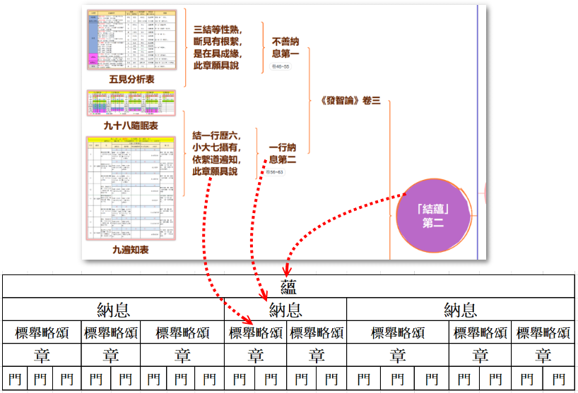

| |
問：誰造此論？
答：佛世尊！所以者何？以一切種所知法性甚深微妙，非佛世尊一切智者，誰能究竟等覺開示？若爾，此中誰問？誰答？
問：若爾，此論何故傳言〜尊者迦多衍尼子造？
答：由彼尊者受持、演說，廣令流佈，是故此論，名稱歸彼，然是佛說。
問：豈不前言，以一切種所知法性甚深微妙，非佛世尊一切智者，誰能究竟等覺開示？云何彼尊者能造此論耶？
答：以彼尊者〜
亦有微妙、甚深、勐利、善巧、覺慧，善知諸法「自相、共相」，通達「文義及前、後際」，善解三藏、離三界染、成就「三明」，具「六神通」及「八解脫」，得「無礙解」，獲「妙願智」。
曾於過去五百佛所，積修梵行、發弘誓願：「我於未來釋迦牟尼佛般涅槃後，造阿毘達磨。」故如是說！
一切如來、應正等覺-弟子眾中，法爾皆有二大論師任持正法，若在世時，如尊者舍利子；若般涅槃後，如尊者迦多衍尼子。故彼尊者，以「願智力」觀法所益，而造此論。
問：若爾！佛說阿毘達磨，何者是耶？
答：世尊在世，於處處方邑，為諸有情以種種論道，分別演說阿毘達磨。佛涅槃後或在世時，諸聖弟子以「妙願智」，隨順纂集，別為部類；是故尊者迦多衍尼子，佛去世後，亦以「妙願智」，隨順纂集造〜《發智論》。
謂於佛說諸論道中〜安立章門→摽舉略頌→造別納息→制總蘊名。 |
| |
顯己智見，無錯亂故。謂若智見有錯亂者，其所造論亦復錯亂，不能立「蘊、納息、章、門」。若彼智見無錯亂者，其所造論亦不錯亂，能善立「蘊、納息、章、門」。尊者顯己智見無謬，故先立「章」，然後作「門」。 |
|  |
 |
| |
資料出處： |
|
| |
內容：
本論的大意： 本論共二百卷，內容可分為「序說」、「正說」、「結說」。
-
第一卷為「序說」。
-
第二卷至第二百卷為「正說」（即本論共分八個大要）。
-
第二百卷最後的偈頌為「結說」。
|
一、序說： |
第一卷：先說明造論者是誰，及本論分「雜蘊」、「結蘊」、「智蘊」、「業蘊」、「大種蘊」、「根蘊」、「定蘊」、「見蘊」等八個論說。說明經、律、論等三藏，何謂阿毘達磨及解釋本論所依據的《發智論》，最後附中譯經序。 |
二、正說： |
本論共分八大項即〜 ⑴雜蘊：種種異相論道。⑵結蘊：集結論道。⑶智蘊：集智論道。 ⑷業蘊：集業論道。⑸大種蘊：集大種論道。⑹根蘊：集根論道。 ⑺定蘊：集定論道。⑻見蘊：集見論道。
◎再依此八大項，再詳細論說… |
⑴雜蘊： |
論說種種異相論道，分為「世第一法」、「智」、「補特伽羅」、「愛敬」、「慚愧」、「相」、「無義」、「思」等八個角度探討。 |
| |
1.「世第一法」：（第二卷至第九卷）
●以「世第一法」為題問，沒世第一法，不能入「正性離生」及「得-預流等四果」。 並對本蘊為作一次第說明…因為異生身中-雜染品法，要成就世第一法（即無我智），即一智，知一切法。 而此無我智，何由而生？即從補特伽羅此生十二支緣起。 此緣起覺，何由而起？謂愛及敬。 如是愛敬，何因而生？謂慚及愧。 如是慚愧，何由而有？為解法相，色法、生、老、無常。 此解法相，何由而得？謂捨-無義修，習-有義，諸修劣苦行，當知無義俱。 誰捨無義，修習有義？謂能正思。 正思惟者〜從各部經的經義，不同的角度… 從色法及心所法及三界廣泛的解釋。 從煖、頂、忍-善根等，順抉擇分、順解脫分、四諦十六行相等，成就聖果。 說明〜種種薩迦耶見。 2.「智」：（第九卷至二十三卷）從各部派學說，廣釋〜
●「智」和「識」一切法非我的行相、二心展轉相因、相緣、等無間緣。
●聖、凡不同的作意、各種心及心所。
●何緣能憶本所作事？忘而復憶等記憶事、說明「六根」與「境識」的關係。
●阿羅漢諸結已盡，不受後有。
●欲分別《契經》義，故便有名句、句身施設，令疑者能解。
●為止無因、惡因，故說明相應、俱有、同類、遍行、異熟、能作等六因由因說緣苦、集的隨眠由智，斷隨眠等。
3.「補特伽羅」，第二十三卷至第二十九卷：補特伽羅生十二支緣起，故廣釋〜
●十二緣起的流轉和還滅等性相關係。
●依三學增上，為去無明勤修戒，廣說〜出入息、持息念等定力的修持，由四諦十六行相慧觀斷離滅，而得解脫。
4.「愛敬」：（第二十九卷至三十四卷）
●欲有修習慚愧圓滿，先決條件愛敬亦得圓滿。
●於佛、法、僧、親教軌範及餘隨一有智尊重同梵行者，愛樂心悅、恭敬而住，若於是處，有愛及敬。
●次說佛、法、僧的殊妙，廣說〜財、法供養及恭敬。然佛世尊法身功德極圓滿，故定不於他受法供養，但生身必待衣食等資，故有於他受財供養。
●而廣說〜身力及佛的十力、四無畏、為拔濟有情增上苦難大悲行、佛說法時「三念住」、成就「七妙法」及「五聖智」和「三摩地」等。
●擇滅、非擇滅，從擇滅說明〜有餘及無餘二種涅槃，及學、無學、非學非無學。
●無學成就戒蘊、定蘊、慧蘊、解脫蘊、解脫智見蘊等，出離聖道法。
●唯一究竟，智遍知及斷遍知二種遍知、以五取蘊通二遍知。
●最後以過去釋迦菩薩度化多求王，說明三歸依等。
5.「慚愧」：（第三十四卷至三十八卷）無慚、無愧，破壞世間，故顯其相，令速厭斷，先廣釋〜
●無慚、無愧和慚愧，為求無慚、無愧，以猶有微俱行不善根未斷。
●為捨離欲，故應退增上不善根，猶有微俱行善根未斷，從此有餘善法當起清淨，明無漏善根。
●說明掉舉和惡作、惛沈和睡眠諸種變壞心，見所夢事為心、心所法於所緣轉。
●無明蓋攝貪欲、瞋恚、惛沈睡眠、掉舉惡作、疑等五蓋。
6.「相」：（第三十八卷至三十九卷）為了解有為、無為法，廣釋〜
●老、死、無常，有為、無為相法。
7.「無義」：（第三十九卷至四十二卷）佛陀審觀察苦行，畢竟不能斷諸煩惱，得真義利，故廣論〜
●苦行無義及諸有情為欲超越老死海，故修有義苦行。
●結加趺坐的威儀，念令心現矚定境，無倒明了住對面念（問：住對面念，是何義耶？答：面、謂定境。對、謂現矚。此念令心現囑定境，無倒明了；名對面念。）、觀行、修不淨觀，入五現見等至，第六無相住功德。
●佛轉法輪，憍陳那等苾芻見法，佛對摩揭陀國諸輔佐臣-化法調伏或是法隨法行。 ●說明多欲不喜足，難滿和難養，易滿、易養等。
8.「思」：（第四十二卷至四十五卷）為明〜有執思慮與心的種種，廣釋〜
●思和慮、聞思修所成慧，尋和伺，掉舉和心亂，十大地法、大煩惱地法、小煩惱地法、大善地法、大不善地法等諸心所及有無覆記。
●三摩地所緣行相。
●論說種種無明，如不正知、生疑、妄語、憍和慢、增上慢，為除諸無明所緣四諦情形，說明種種慢、種種尋、識與智差別，有漏行和無漏行、有為法和無為法等；行圓滿、護圓滿，異生性，邪見、邪思惟之相應法等。 |
⑵結蘊： |
雜蘊之覺，要由明浄諸結（煩惱），故廣釋〜身見、戒禁取、疑等三結及九十八隨眠，分為「不善納息」、「一行」、「有情」、「十門」等四個角度探討。 |
| |
1.「不善」：（第四十六卷至五十五卷）廣釋〜
●三結、八支聖道、三不善根、三漏、四瀑流、四軛、四身繫、五蓋、五結、五順下分結、五順上分結、五見、六愛身、七隨眠、九結、欲界繫三十六隨眠，色、無色界繫各三十一隨眠，共九十八隨眠。
●見所斷、修所斷、五補特伽羅，隨信行、隨法行、信勝解、見至、身證。
2.「一行」：（第五十六卷至六十三卷）廣釋〜
●九結五事中的繫結-不繫之行，三結乃至九十八隨眠的相互關係，以及它們三有-三世因結繫相續乃至四靜慮、下三無色，非根本地，有世俗道能斷煩惱。諸結的已繫、當繫、今繫和退道時的結繫，九遍知成就等。
3.「有情」：（第六十三卷至七十卷）欲顯〜三界各二部結，令諸有情受種種苦，故廣釋〜
●三界見-世俗-無間及解脫道-行相所緣。
●諸結斷盡，沙門果攝，以及四沙門果相。
●學、無學、信勝解轉根等。
●三有的投生。
●廣說各種中有等。
4.「十門」：（第七十一卷至九十二卷）本章節共分三類〜 一、二十二根至見、修所斷、無斷法，名境界類； 三、四聖諦乃至三重三摩地，名功德類； 三、三結乃至九十八隨眠，名過失類。 廣釋〜
●二十二根、十八界、十二處、五蘊、五取蘊、蘊與五取蘊差別。
●六界、有色無色法、有見無見法、有對無對法、有漏無漏法、有為無為法、過去未來現在等三世、欲界、色界、無色界等三界繫。
●學、無學、非學非無學法，見斷、修斷、無斷法，苦、集、滅、道四諦，四靜慮，一慈、二悲、三喜、四捨等四無量，空無邊處、識無邊處、無所有處、非想非非想處等四無色，八解脫，八勝處，十遍處。
●苦、集、滅、道、修-五部隨眠隨增、所緣縛、相應縛、所緣、能緣、緣識、緣緣識、十六心、成就、不成就。 |
⑶智蘊： |
斷結，由諸智證，故次第說〜三智蘊。分為「學支」、「五種」、「他心智」、「修智」、「七聖」等五個角度探討。 |
| |
1.「學支」：（第九十三卷至九十七卷）說明有學-八學支及阿羅漢-十學支。 廣釋〜
●見乃至正定八學支的成就〜苦遲、苦速、樂遲、樂速四種通行及捨斷；無學-正見乃至正定及無學-正解脫、正智十學支的成就。
●「見」、「智」、「慧」的性相、相互關係、成就。
●八道支和七覺支、三十七菩提分法、世俗正見和正智、無漏正見和正智性相和相互關係。
2.五種，第九十七卷至九十九卷：諸邪見所見，起身、語業，能招不可愛樂等事，故廣釋〜
●邪見邪智、正見正智、諸種左慧、釋左義。
●學、無學、非學非無學的見、智、慧。
●梵天惡見，大天五事惡見等。
3.他心智，第九十九卷至一○五卷：廣釋〜
●他心智、宿住隨念智、本性念生智，時愛心解脫、不動心解脫與盡智、無生智互相關係。
●學、無學與盡智、無生智、明和智、六通和明、由諦現觀時，所得佛法僧戒等四證淨、預流者斷四顛倒、空無願無相三解脫門，三摩地與三解脫門差別，在三世諸界的修習得果等。
4.修智，第一○五卷至一○八卷：法智乃至道智等智，攝諸智盡，故廣釋〜
●八智的性相、相攝、相互成就。
●離欲及未離欲之異生的修得、斷結、結滅作證。
●起無常想，修七處善、三義觀等。
5.「七聖」：（第一○九卷至一一一卷） 隨信行乃至俱解脫等七種聖人之修道。廣釋〜
●一隨信行，二隨法行，三信解，四見至，五身證，六慧解脫，七俱解脫）
●七聖者的八智、三三摩地相互關係及成就。
●相應的無漏根、覺支、道支現前時，所現起的智數、五德相互關係及成就。
●三三摩地、三無漏根相應法，四十四智、七十七智、一一智、八智和三世相互關係及成就等。 |
⑷業蘊： |
無業障補特伽羅，才能起斷結諸智，故說明〜行及業的種種關係，分為「惡行」、「邪語」、「害生」、「表無表」、「自業」等五個角度探討。 |
| |
1.「惡行」：（第一一二卷至一一六卷）說明三惡行、三不善根及善行、善根和業等相攝之關係。廣釋〜
●三惡行、三不善根、三妙行、三善根、十不善業道、十善業道、三業、四種異熟業等等諸業、業感的身心受、三障、五無間業、惡行最大破僧罪及其業果等。
2.「邪語」：（第一一六卷至一一八卷）諸語等，由貪所起，名邪命的關係。廣釋〜
●十不善道，由貪瞋癡生、律儀和不律儀、三惡行和三曲、由瞋起穢、由貪起濁、發身語業的二種等起。
●三妙行攝三清淨行、三寂默及其差別。
●三惡行和非理所引的三業，三妙行和如理所引的三業等異熟因果等。
3.「害生」：（第一一八卷至一二一卷）殺生的異熟果報等，廣釋〜
●四種害生及其異熟果、無間業加行感異熟和造作增長二業。
●於一切有情防護、四種律儀、別解脫律儀從何得？身和身業的成就。
●異生命終時，忍法捨、不捨；四生、身和身語意業的成就關係；業和異熟果的關係；不善業的顛倒不顛倒、三界繫不繫等。
4.「表無表」：（第一二二卷至一二四卷）說明表業及無表業等。廣釋〜
●表、無表業、身表無表業、三世身語表無表業等，三界不繫業不繫法，有漏無漏業和有漏無漏法，三學業和三學果，身戒心慧的修和不修，過去現在未來戒類關係。
●七眾別解脫律儀的建立，近事和五學處、三歸及諸別解脫律儀等。
5.「自業」：（第一二四卷至一二六卷）有情皆由自業，皆從業生，業為所依。廣釋〜
●自業、業成就，當、不當受異熟分別、預流者不墮惡趣和所得智、諸學的謀害、留多壽行和捨壽行、心狂亂、無慚無愧相應法皆不善、佛教的法體善無記、世間種種工巧業處、學無學非學非無學戒的成就等。 |
⑸大種蘊： |
諸業依四大種而生，故明四大種，分為「大種」、「緣」、「具見」、「執受」等四個角度探討。 |
| |
1.「大種」：（第一二七卷至一三一卷）諸所有色，皆是四大種及四大種所造。 廣釋〜
●大種所造色以及它的相和業、觸處、實事十一種。
●大種所造處的→有見無見、有對無對、有漏無漏、有為無為、三世、三性、三界繫、三學。
●大種和所造色及善等造色，善、不善、無記等相互關係。
●四大種之定滅，住於何果等。
●四食的粗細、界、趣、生等分別乃至布施飲食功德等。
2.「緣」：（第一三一卷至一三四卷）說明大種與大種，為幾緣？廣釋〜
●大種蘊、大種各自相緣關係，和所造色、心心所法、十二處、二十二根的相緣關係，以及它的不相應、增減、恆不相離性等。
●三世大種和所造色，欲、色界繫大種和所造色、四大種特性、十二處能牽、所牽等，世界成住壞空等。
3.「具見」：（第一三四卷至一三七卷）廣釋〜
●已具見諦的聖者，所成身語業色的界繫大種所造。
●上界下生者，初得諸根的大種為因，於諸界化身和化事。
●中有有無大種。
●世、劫和心起、住、滅、剎那，有為法的時、色、名三分齊，四緣乃至二緣生法，因相應不相應、緣有緣無緣法等分別，內無色想觀外色法，除色想、四識住七識住、九有情居等。
4.「執受」：（第一三七卷至一四一卷）廣釋〜
●有執受、無執受和大種及所造色的相互相緣。
●因相應不相應、有所緣無所緣乃至有為無為等法的相緣。 諸種欲有、色有諸根，大種和彼心、心所法相緣。 有執受無執受、順求順取、順結非順結、見處非見處等，法內外和內外處攝分別，身心受至百八諸受相互相攝。 十八意近行、三十六師句、諸聖者過去現在未來修四念住、四正斷、四神足、五根、五力、七覺支、八道支、四靜慮、四無色、四無量、八解脫、八勝處、十遍處、八智、三等持，證四沙門果、五通等。 |
⑹根蘊： |
根為大種所造，勝者，故釋之。分為「根」、「有」、「觸」、「等心」、「一心」、「魚」、「因緣」等七個角度探討。 |
| |
1.「根」：（第一四二卷至一四六卷）二十二根的幾學、幾無學、幾非學非無學。廣釋〜
●二十二根的因緣、實體數、一一增上處等。
●建立勝義根的異說。
●女男二根、三無漏根、二十二根的學無學非學非無學、善不善無記、有無異熟、見修所斷、不斷乃至三界繫不繫、因相應等、緣有緣等分別和它們的意義，蘊、處、界所攝的根，根非根相緣相生、二十二根的相互因緣等。
2.「有」：（第一四七卷至一四八卷）欲有相續最初得幾業所生根，廣釋〜
●三界最初所生根數、三界繫法思惟和遍知關係，得四沙門果的根數、遍知根數、成就不成就、斷何界結、何果所攝？
●諸根無漏緣三界繫和法類智相應關係
●以及法類智的自性乃至所緣等分別。
●時心解脫和不動心解脫的學無學根分別。
●以無間道證四沙門果時相應等五門分別。
●證四沙門果時所永斷、滅、起的根數等。
3.「觸」：（第一四九卷至一五○卷）廣釋〜
●十六觸的性相以及和根的相應關係，
●眼等五根和身根成就關係，
●天眼和天耳，地獄乃至俱解脫者成就的根數。
●眼等乃至慧根得遍知時，滅作證時的根數等。
4.「等心」：（第一五一卷至一五五卷）一切有情心的等起、等住、等滅。廣釋〜
●心的等起、等滅，壽的問題。
●無想定、滅盡定入出時，滅、起的根數和滅、起的心、心所界繫分別等。
●生無想天時，以及無想有情的想和食等。
●二十二根、五力、七覺支、八道支、八智、三三摩地所攝的根數和相應的根數。
●三界死生時，滅、起的根數和滅起的心、心所界繫分別。
●阿羅漢涅槃時，最後滅的根數等。
5.「一心」：（第一五五卷至一五六卷）廣釋〜
●諸法與心一起、一住、一滅，和心的相應關係。
●六根的修不修，不成就學根得學根。
●捨無漏根得無漏根，諸未知當知根，能否現觀四諦？
●以及盡智、無生智、無學正見等性相、所緣相應等。
6.「魚」：（第一五六卷）廣釋〜
●二十二根，隨一成就、不成就等，善、不善、無記諸根，各以善、不善、無記根為因。
7.「因緣」：（第一五六卷）廣釋〜
●根因緣和所緣緣的三世、三性乃至四諦斷、八智斷分別。
●以及根因緣和所緣緣的四諦斷、八智斷相互關係。 |
⑺定蘊： |
諸根清淨，由定勢，分為「得」、「緣」、「攝」、「不還」、「一行」等五個角度探討。 |
| |
1.「得」：（第一五七卷至一六二卷）廣釋〜
●得、非得的三世、三性、三界繫、三學、三斷分別等。
●見、修、無學道所起的得和四諦的得以及離繫得等。
●與三性心、三界心、三學心、三斷心俱起的三性、界繫、三學、三斷分別，染靜慮支、味相應靜慮入出等。
●入靜慮次第乃至不入彼靜慮而生其處、得下靜慮未得上靜慮生處、諸靜慮心捨、得和滅起等。
●四無量心和等無間緣的行相、無量、淨定、解脫、勝處、遍處、八智、三三摩地的斷結和受異熟果處等。
2.「緣」：（第一六二卷至一六五卷）廣釋〜
●八等至和三等至、初靜慮乃至無所有處三等至的得、捨、退、淨。
●初靜慮四順分、諸種修法，淨初靜慮乃至第四靜慮的修無漏，味相應、淨、無漏靜慮和無色的相緣。
●定的順次順超、逆次逆超以及超定的加行和成滿等。
3.「攝」：（第一六六卷至一七三卷）廣釋〜
●十想和它的界地、所依、行相乃至有為無為、自性斷所緣斷、轉隨轉等諸門分別。
●十想和四靜慮、四無量乃至八智、三三摩地的相攝、相應。
●成就初、二、三、四靜慮者，對於四靜慮乃至三三摩地等的成就數限分別。味相應、淨、無漏和四靜慮、四無色相互成就不成就。
●得、捨、退等分別。
●六十五等至的緣處，和在三乘中的成就，等至隨以八等至為因緣，和等無間緣、所緣緣的關係以及為等無間緣和所緣緣的關係。味相應、淨、無漏八等至的頓得、頓捨和漸得、漸捨。
●身語表、無表、三惡行、三妙行、三善不善根、四聖非聖語、四生、四入胎、四識住五蘊、五取蘊、五趣、五妙欲、五學處、六內處、七識住、八世法、九有情居、十業道、四靜慮、四無量、四無色、八解脫、八勝處、十遍處、他心智、世俗智等滅所依的定等。
4.「不還」：（第一七四卷至一八三卷）廣釋〜
●五種不還、七善士趣、雜修靜慮、五淨居天、學、無學和為得、未得，而學、不學分別。
●順流、逆流和自住義，得極禁和得極跡者的關係。
●菩薩相異熟業，三十二相和百福莊嚴，菩薩修行經三大阿僧企九十一劫，菩薩修四波羅蜜，舉釋迦佛補處菩薩生睹史多天下生，慈氏受記，當來作佛。
●以及苾芻於現法當辦聖旨的智與智用，願智、無諍，舉釋迦佛諸弟子之修行、四聖種、法隨法行、法輪自性、轉法輪、正法的住滅等。
5.「一行」：（第一八三卷至一八六卷）廣釋〜
●空、無願、無相三三摩地之成就，空、無願、無相相修和斷結。
●思惟何繫行入正性離生？
●盡智、無生智的念住、無漏初靜慮的樂和輕安等覺支的樂、有頂聖者依無所有處定得羅漢果，入定者不應聞聲。
●性定和不定、邪正性定不定三聚。
●覺支和正漏法的成就、得、捨、退、未斷已斷和未遍知已遍知。
●生盲、生聾引發天眼、天耳。
●異生、聖者的退不退，上界下生時，所得法的曾、未曾之得分別，五通的能限，金剛喻三摩地時六智及其所緣等。 |
⑻見蘊： |
雖有得定，但邪見引生諸惡見趣，為令諸識相速斷，故說見蘊。分為「念住」、「三有」、「想」、「智」、「見」等五個角度探討。 |
| |
1.「念住」：（第一八七卷至一九二卷）廣釋〜
●三種四念住、念住的種類、四念住相關之斷煩惱數。
●聞思修所成念住、念住的加行和生起次第、聖者三念住、一趣道、四念住的習修、得修和相修以及其自性、地、相應、行相、所緣等分別。
●如實知三受以及它的身心受、有無昧受、受耽嗜依、出離依受。
●有貪心乃至解脫心、五蓋、六結、七覺支等等的智。
●貪、瞋、癡增減的等隨觀、死邊際受、舉佛聖弟子阿羅漢般涅槃及佛般涅槃為例，四有、三有和五行等。
2.「三有」：（第一九二卷至一九五卷）欲有等，相續及捨滅等種種探討。廣釋〜
●諸有和五種相續、三有捨而相續、滅而法現前等。
●三界死生的捨、得、滅、起諸蘊，隨眠不於他界法隨增。
●三界的建立，修無常想乃至滅想等十想、得修和思惟所緣，起善染無記尋伺的思惟，諸法因、緣無明等。
3.「想」：（第一九五卷至一九六卷）諸法無常想生，彼法無常想相應，廣釋〜
●十想生法和十想相應及所緣。
●由心引起的身語業差別，所通達、所遍知、所斷、所修、所作證法、四有為相和見疑相應、不相應的受的隨眠隨增，因、道、緣起等的界、處、蘊、所攝等。
4.「智」：（第一九六卷至一九七卷）通達彼事能遍知，廣釋〜
●能通達、能遍知以及能厭、能離、修厭等。
●法與法作四緣，或時不作的問題。
●意觸和三事與合觸，慢和自執與不寂靜，業和不律儀與律儀，不淨觀乃至無學道等的得及成就相互關係。
●苦聖諦法處，蘊、處、界和色、心、心所法、不相應行、無為等一切法關係。
5.「見」：（第一九八卷至二百卷）廣釋〜
●無施與、無愛樂等各種邪見、常見、斷見、戒禁取見、見取見等及其對治道。
●九慢和七慢，我作、他作二種外道見。
●外道諸見的五種分類，六十二見，斷常二見等。 |
參、結說： |
三藏法師玄奘譯斯論，訖說頌言，明造論時、地、人及回向。佛涅槃後四百年，迦膩色加王贍部，召集五百應真士，迦濕彌羅釋三藏。其中對法毘婆沙，具獲本文今譯訖。願此等潤諸含識，速證圓寂妙菩提。 |